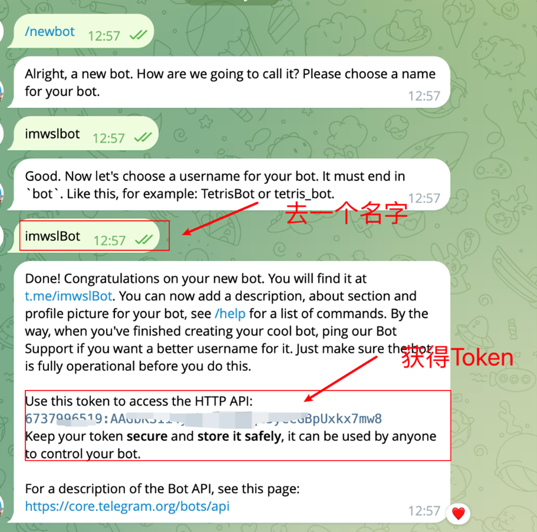
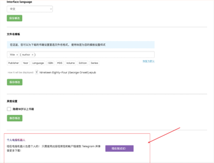
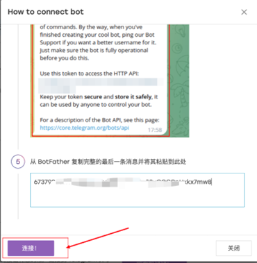

利用Telegram搜索書籍---使用telegramBot 打開Z-library圖書館。
首先，在Telegram搜索欄 找BotFather機器人，在機器人窗口輸入 /newbot, 根據提示設定機器人名字（之後在此名字欄打書名或書類即可獲取圖書）和用戶名，之後會自動發送HTTP API（當作普通一次性密碼），複製包含API的整條信息。其次，進入Z-library鏈接並登入 https://zh.zlibrary-sg.se/ ，在右上角打開功能欄，再進入左下角（編輯個人資料欄），在最底下找到並創建個人電報機器，在彈出的窗口第5欄，黏貼之前複製的信息（含API 一串字符），最後直接連接。在TEL 搜索設定的機器人名字或者用戶名，在對話窗口直接輸入書名即可找到書籍，多數是epub or pdf檔案（均可使用手機軟件“書籍”打開）。



@PZB 2024 - NewChapter
s